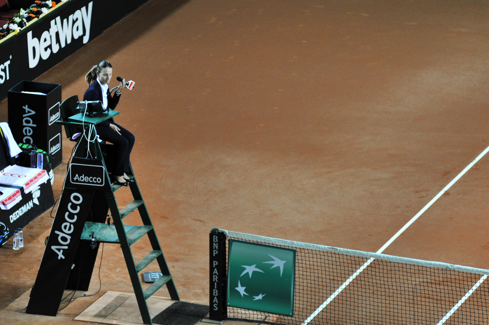
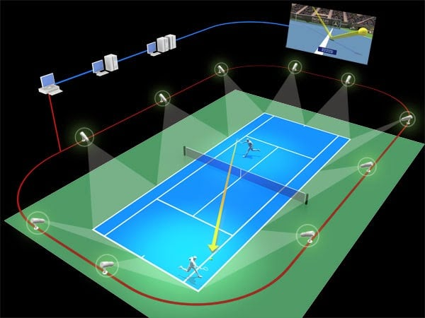

Juez de Silla
¿Cual es su trabajo?
Es la autoridad final en todas las cuestiones durante el partido.
El juez de silla a menudo está situado en una silla alta en el centro de la cancha,
detrás de un poste de red. Desde esta posición, el juez de silla convoca la puntuación del partido a los jugadores
y espectadores entre los puntos. En la conclusión de un punto, juego o set, el juez de silla clasifica a los jugadores para asegurar que cumplan
con las regulaciones sobre el ritmo del juego. El juez de silla es responsable de completar un cuadro de mando, el registro histórico oficial del partido.

Ojo de halcón
¿Para que sirve?
También conocido como ojo de águila, es un sistema informático utilizado para seguir la trayectoria de la bola.
El sistema informático genera una imagen de la trayectoria de la pelota que puede ser utilizado por los jueces
para decidir en jugadas dudosas.
Método de operación
Los sistemas están basados en cálculos de triangulación a partir de imagenes visuales y mediciones de tiempo proporcionados por cámaras de video de alta velocidad.
Deben existir al menos 4 cámaras de vídeo colocadas adecuadamente alrededor de la zona de juego para proporcionar los datos necesarios.
Estos datos son procesados por un procesador de alta velocidad, que reconoce en las imágenes la pelota de tenis y calcula su trayectoria.
Para ello necesita un modelo del área de juego, la posición de las cámaras y su lugar de enfoque. Como resultado, calcula la posición en 3D de la pelota para cada imagen,
partiendo de, al menos, dos cámaras que han tomado una imagen de forma simultánea.
Valiendose de las leyes físicas, interpola las distintas posiciones calculadas para recrear la trayectoria seguida por la pelota y su interacción con el área de juego.
